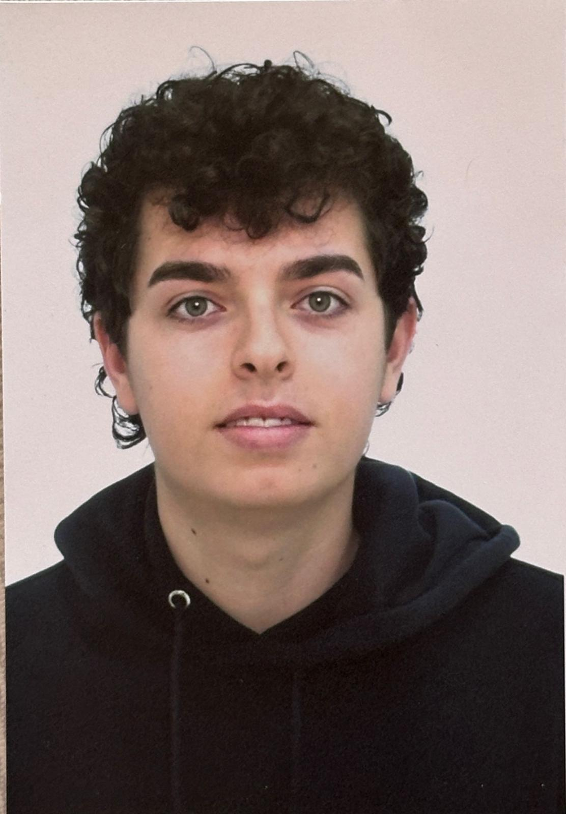

Crítica de cinema en català
El cinema
vist de prop.
Cobertura de festivals internacionals — Venècia, Sitges, Canes — des d'una mirada catalana.
Descobreix
Cobertura de festivals internacionals — Venècia, Sitges, Canes — des d'una mirada catalana.
"Una experiència que costa d'oblidar. Es continua pensant dies després, tornant-hi en imatges o en sons."
Llegir la crítica completaLa nova proposta de Mascha Schilinski, Sound of Falling, arriba als cinemes gairebé un any després de la seva estrena al Festival de Cannes on se li va atorgar el Gran Premi del Jurat ex aequo amb Sirat d'Oliver Laxe. Schilinski, que s'havia estrenat amb Dark Blue Girl al 2017, sembla haver trobat un estil d'una maduresa sorprenent i amb una bellesa molt profunda i premeditada.
El film es desenvolupa al voltant d'una granja al nord d'Alemanya i de quatre noies que viuen en èpoques diferents del segle XX. Totes passen la seva joventut en la mateixa masia al llarg d'un segle, i tot i estar separades pels anys, hi apareixen similituds entre les seves vides. La granja no és només un escenari, sinó que és un personatge més.
Continuar llegint →"Una experiència que costa d'oblidar. Es continua pensant dies després."
"Una obra que transcendeix la pantalla i connecta el quotidià amb l'etern."
"Sols per la seva visceralitat, ja val la pena viure-la al cinema."
"Una de les millors actuacions animals que s'han vist a la pantalla gran."
"Un realisme poètic devastador impregnat d'una bellesa plena de simbolisme."
"Increïbles seqüències d'acció perfectament coreografiades. Una sorpresa brutal."
"Un autèntic despropòsit. Diàlegs sense vida i personatges sense carisma."


"El cinema és l'únic lloc on pots viure mil vides en una sola."
Soc en Pau, de Figueres, i porto tota la vida amb el cinema al cap. No com a afició passiva, sinó com una manera d'entendre el món: cada pel·lícula és una conversa, una pregunta, una porta a un lloc que d'altra manera no podries visitar mai.
"Crec que el cinema ha canviat, i que es pot — i s'ha de — apropar al públic. Primer Pla neix d'aquesta convicció."
Estudio Biotecnologia a la Universitat de Girona, un grau que m'ha ensenyat a mirar les coses amb rigor i a no conformar-me amb les respostes fàcils. Potser per això la crítica de cinema m'atrau tant: perquè exigeix exactament el mateix.
He cobert festivals com el de Venècia i Sitges, i ara preparo la cobertura de la Quinzaine des Cinéastes de Canes 2026 — un dels espais més apassionants del cinema d'autor europeu. Primer Pla és el vehicle per portar tot això a un públic catalanoparlant que massa sovint no troba la seva veu en el panorama crític internacional.
| Títol ↕ | Festival ↕ | Gènere ↕ | País ↕ | Any ↕ | Nota ↕ |
|---|